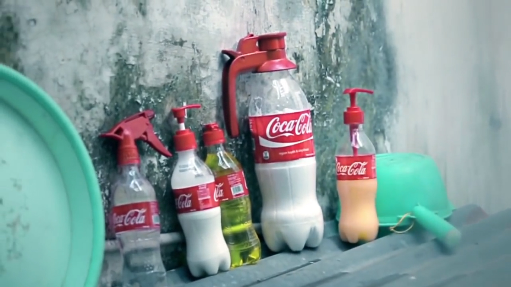

今回ご紹介する法則は、その名の通り、“既にある資産（モノ・サービス）に別の光を当てて新しい用途を開発する”ことで、それまでとは全く異なる顧客体験価値を創出するアプローチ。
“既存資産の別用途開発”の法則です。
[Chapter1] 事例から法則を読み解く
1台のピアノが奏でる5重奏ーThePianoGuysの魅惑的な試み
クラシック音楽を、ユニークな発想と演奏技術の高さで魅了する「The Piano Guys」。
その彼らが試みた、「1台のピアノを5人で弾く」という演奏をご紹介。
素晴らしい演奏ですので、ぜひチェックしてみてください。
ピアノとは、一人で弾くもの。
そんな固定観念を打ち砕くかのような演奏です。
ピアノの弦を指で弾いて、まるでギターのように。
ピアノの弦を弓で弾いて、まるでバイオリンのように。
ピアノの台の叩いて、まるでドラムのように。
さらにそこに、混声合唱も重なっていきます。
{kind=link}
{kind=link}
ピアノという楽器の持つ演奏性を、5人で演奏することで最大限にまで拡張した演奏は、見ていて楽しく、聞いていて美しい、完成度の高いパフォーマンスへと結実していく。
何より、本人たちがワクワクしながら演奏しているのがこちらにも伝わってきますので、非常に多幸感ある映像に仕上がっていますね。
このように、“既に価値が規定されているモノに別の光を当てて新しい用途を開発する”というアプローチは、うまくいけば注目を集め、また、そのモノに「第2の人生」とも呼ぶべき新たな顧客体験価値を創出します。
他の例も見ていきましょう。
以下は、コカ・コーラがベトナムで実施した、“2nd lives（第二の人生）”と名付けられたキャップ型アタッチメント施策。
ベトナムではペットボトルのポイ捨てがよく見られるそうで、それはコカ・コーラであっても同様です。
{kind=link}
ここに目をつけたコカ・コーラが考えたのは、飲み終わったコカ・コーラのペットボトルに、“2nd lives（第二の人生）”とも呼ぶべき新たな別用途を開発する、というアプローチ。
彼らが開発したのは、ペットボトルキャップの新たなかたちでした。
{kind=link}
飲み終えたコカ・コーラのペットボトルのキャップを変えるだけでシャンプー・洗剤入れになったり、

水鉄砲になったり、
{kind=link}
インクを入れればペンになったり、
{kind=link}
鉛筆削りになったり。
{kind=link}
コカ・コーラは“Happiness”をつくりだすことをブランドの至上命題としていますが、この施策では、飲み終わった商品（空き容器）からさえも夢のある顧客体験をつくりだしてしまった、素晴らしい試みです。
これまでご紹介した2つの事例のポイントを、以下まとめます。
＞＞＞＞＞＞＞＞＞＞＞＞＞＞＞＞＞
[ “既存資産の別用途開発”の法則｜Point ]
◎あるモノやサービスを構成する「要素」を分解する（ピアノ→鍵盤、弦、台etc）
◎抽出した要素から「別の新たな価値」を生み出せないか探る
◎既存のモノ・サービスが提供する価値や用いられるシーンを拡張できると良い（コーラ→飲むシーンの脇にある日常生活をさらに豊かにするものetc）
＞＞＞＞＞＞＞＞＞＞＞＞＞＞＞＞＞
以降では、この法則を念頭に置きながら、活用イメージをさらに深めていきます。
[Chapter2] 法則から事例を読み解く
Google Mapストリートビューの新たな活用方法を見出した事例2選
●Case1：Real life｜大手保険会社・Allianz
『人々が読みたくなるような、面白い保険カタログとは何か？』を模索していた、ドイツの大手保険会社・Allianz。
そうした中で、彼らが目をつけたのは、Googleマップのストリートビューでした。
でも、保険会社がなんでGoogle Mapストリートビューを？
Google Mapストリートビューは世界中の色々な場所の360度パノラマ画像をインターネット上で見ることができるサービスですが、そこには時に、思いもよらない面白い光景が写り込んでいることがあるんですね。
そう、たとえばこんな、「玉突き事故」が起きている瞬間をとらえた写真。
{kind=link}
そこでAllianzでは、Facebook上でユーザーの手を借りながら、集まったGoogle Mapストリートビューの面白写真の内容に対し、最適な保険をレコメンドするビジュアルを制作していきました。
例えば、外出中に家のカギを紛失してしまい、なんとか窓から家に入ろうとしているこんな写真には、
{kind=link}
「カギを失くしてしまった場合には、Allianzが開錠サービスを手配しますよ！」
雪の中車が故障してしまい、困った様子のドライバーが写っている写真には、
{kind=link}
「こんな時にはAllianzの事故・故障サービスチームがすぐにあなたをサポートします！」
ストリートビューに映り込んだハプニング写真に対して、「こんなトラブルには当社の保険を。」とコメントを掲載する手法が、ユーザー間で「これ、面白い！」と話題化。
これらの写真をもとに制作された紙のカタログは、なんと従来より1300％も多く発行されたそうです。
{kind=link}
Google Mapストリートビュー、という誰もが使えるツールの新しい用途を見いだし、自社のサービスと紐付けた上手いプロモーションです。
●Case2：Google Street Art Project｜Google
Googleが自ら行っているプロジェクトのひとつに、「Google Street Art Project」なるものがあります。
その中身はタイトルの通りで、Google Mapストリートビューに映り込んだ世界中のストリートアートをコレクションとしてアーカイブしていこう、という取り組み。
{kind=link}
{kind=link}
{kind=link}
{kind=link}

ストリートアートの魅力とは、その場にしかない、その場自体をアート空間に変えてしまうかのような迫力とユニークさ。
いつ消えてしまうかもわからない、ダイナミックな街のアートをアーカイブして後世に残していく、というこの取り組みは、意義深いものがあると思います。
こちらも、Google Mapストリートビューから派生して新たな用途を開発した、素敵な取り組みです。
こうして見ていくと、“既存資産の別用途開発”の法則には様々な可能性が眠っているように思いますが、いざ自分が当事者として新たな用途開発に臨もうとすると、大変難しい作業となることが想像できます。
このモノ・サービスの価値はこう、と一度規定してしまったものを疑うには、非常に柔軟な思考・発想力が求められるからです。
だからこそ、提供するモノ・サービスが普段どのように使われているのかをつぶさに観察しながら、時には特定のユーザーが「こんな面白い活用方法みつけた！」と発した声を、丁寧にすくって汲み取る姿勢を持つことが大切かもしれませんね。
※その他の類似施策は、以下URLにまとまっていますのでご参考ください。
アイデアの補助線（Pinterest）｜ 既存資産の別用途開発 の法則
※記事の更新情報は、Facebookページにて随時配信中です。ぜひチェックしてみてください。
Related Posts
-
 2016年4月25日
2016年4月25日
-
 2016年4月5日
2016年4月5日
-
 2016年3月19日
2016年3月19日